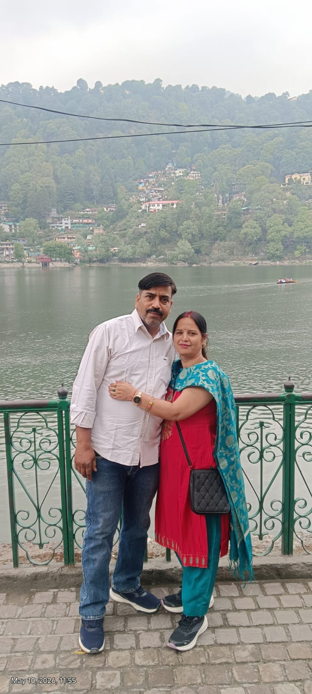
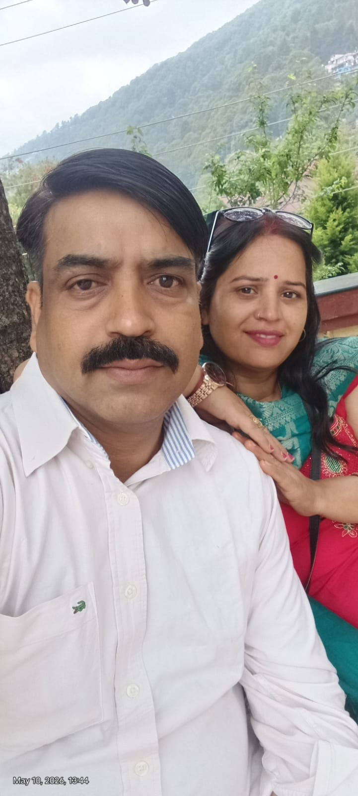

memory no. 01
One of those moments
you just keep.
you just keep.
Two photos. A bunch of memories. And a little surprise waiting at the end.
This isn't meant to be perfect. It's meant to feel like the two of us: a little random, a little silly, and full of moments worth keeping.
So here's a tiny digital scrapbook — made from the memories I already have, with a few empty spaces for the ones still waiting to happen.


Some things are easier to put into a little website than into one message.
Thank you for being part of so many good moments. For the laughs, the random conversations, the quiet moments, and all the memories that somehow became important.
Keep this page somewhere safe. We can always add another photo, another memory, another chapter.
— from someone who thinks you're pretty special ♡
Because this little page isn't supposed to be finished yet.
And whenever you come back here, maybe there'll be something new.